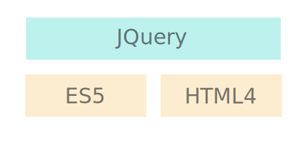
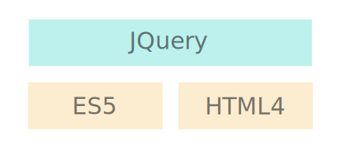
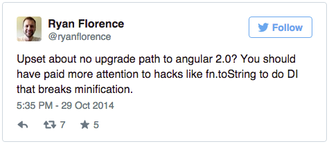

Angular 2.0 Sneak Peak
Michael Lehmann
@lehmamic
Christian Kohler
@KohlerChristian
What do we show you today?
Why Angular2?
Kanban App
Migration Path
Why Angular2?
Anno 2009
Technologies 2009
 
Today
«Our goal with Angular 2 is to make the best possible set of tools for building web apps not constrained by maintaining backwards compatibility with existing APIs.»
Technologies 2015


NgEurope 2014


Kanban App

Application
Board
List
Component
Dependency Injection
Templates
Properties
Form
Component
Components Hierachy
@Component({
selector: 'my-app'
})
@View({
template: 'Hello {{ name }}
'
})
// Component controller
class MyAppComponent {
name: string;
constructor() {
this.name = 'Alice';
}
}Dependency Injection
Constructor injection
constructor(boardService:BoardService){
this.boardService = boardService;
}
bind(BoardService).toClass(BoardService)
Constructor injection
@Component({
viewBindings: [
bind(BoardService).toClass(BoardService)
]
})
constructor(boardService:BoardService){
this.boardService = boardService;
}
Constructor injection
@Component({
viewBindings: [
BoardService
]
})
constructor(boardService:BoardService){
this.boardService = boardService;
}
Every component has its own injector
Injector bubbles up till he finds a binding
<board> <list> <button>
Template Syntax
DirectivesLocal Variables
<video-player #player></video-player> <button (click)="player.pause()">Pause</button>
Templates And *
<todo-cmp *ng-for="#t of todos; #i=index" [model]="t" [index]="t"></todo-cmp>
<template ng-for ngForOf="todos" #t="$implicit" #index="i"> <todo-cmp [model]="t" [index]="i"></todo-cmp> </template>
Directives
So we still have directives?
Directives
Template Syntax
propertries and eventsProperty And Event Bindings
Property Bindings<todo-cmp [model]="myTodo"></todo-cmp>Event Bindings
<todo-cmp [model]="todo" (complete)="onCompletingTodo(todo)"></todo-cmp>
Property And Event Code Behind
@Component({
selector: 'todo-cmp',
properties: ['model'],
events: ['complete']
})
// Component controller
class TodoCmp {
model;
complete = new EventEmitter();
onCompletedButton() {
this.complete.next(); // this fires an event
}
}
Two-Way binding
<input [ng-model]="todo.text" (ng-model)="todo.text=$event"></input>Or with syntactical sugar
<input [(ng-model)]="todo.text"></input>
Forms
Form
- No digest cycle
- reactive (event based)
- data driven
Forms

Sounds great!
Can I use Angular2 for my next project?
Probably not
😢
Modern browsers means the set of browsers known as ‘evergreen’ or always automatically updated to the latest version. Building for these browsers let us drop many hacks and workarounds that make AngularJS harder to use and develop on than it needs to be.
The set currently includes Chrome, FireFox, Opera, Safari, and IE10/11. On mobile, we’ll support something close to the list of Chrome on Android, iOS 6+, Windows Phone 8+ and Firefox mobile. We’re looking into supporting older versions of Android, but the jury is still out.
Transpiler
ES6/7 to ES3/5

Transpiler
ES6/7 to ES3/5
Polyfills
For templates, shadow dom, object.observe...
Angular2 is work in progress
Release to be expected in spring 2016
Migration
From Angular 1.x to Angular2
Prepare yourself for the future!
- Use controller as syntax
- Treat everything as a directive
- Use ES6/7 or TypeScript
- Structure your SPA into components
- Follow John Papa's styleguide
Hotlist Angular 1x Migration
- The New Angular Router (coming with Angular 1.5 or 1.6)
- Components in Angular 1.X
- Google works on automated mirgation tools
- Mix Angular1 and Angular2